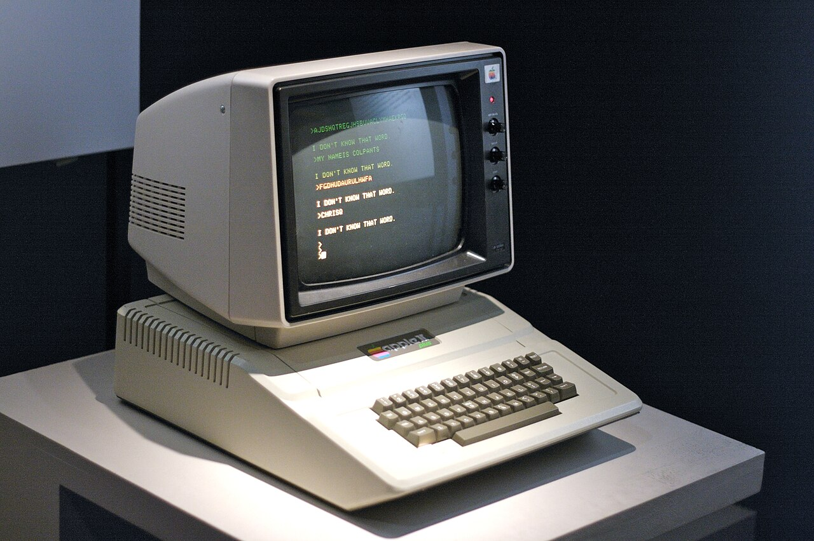
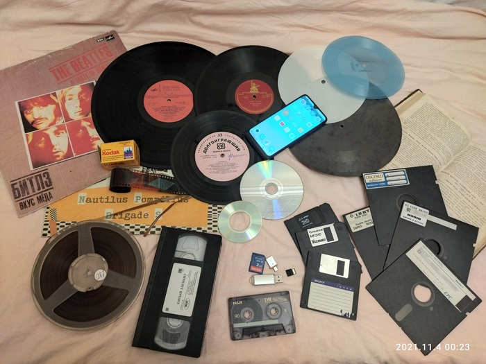
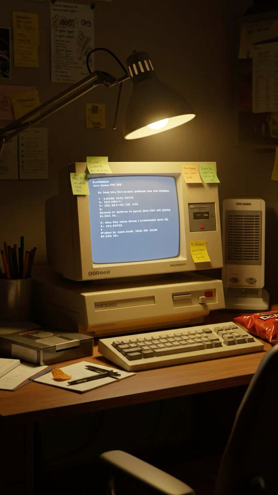
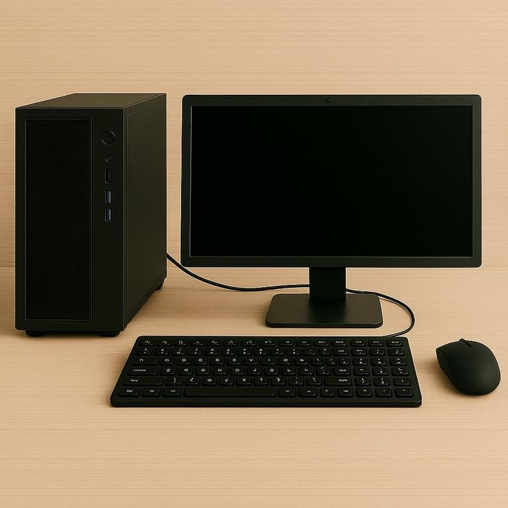
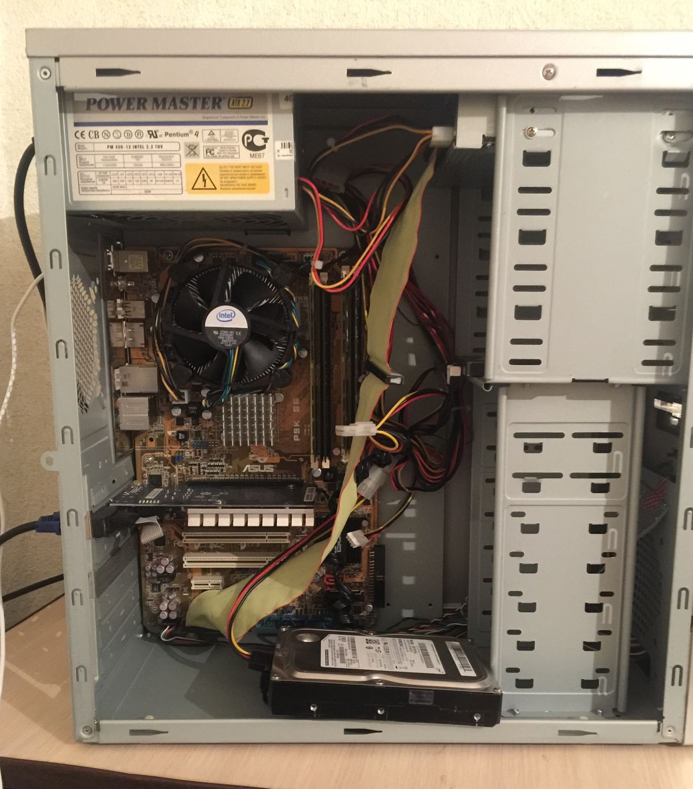
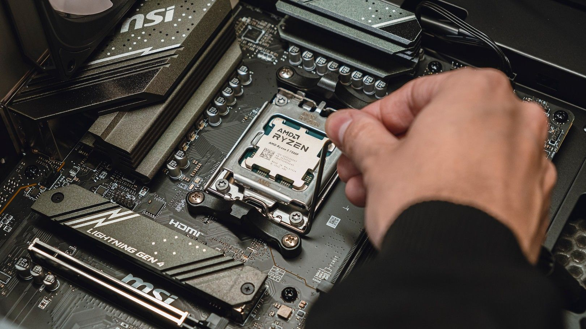
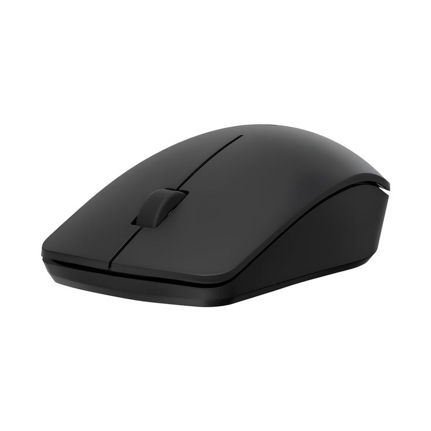
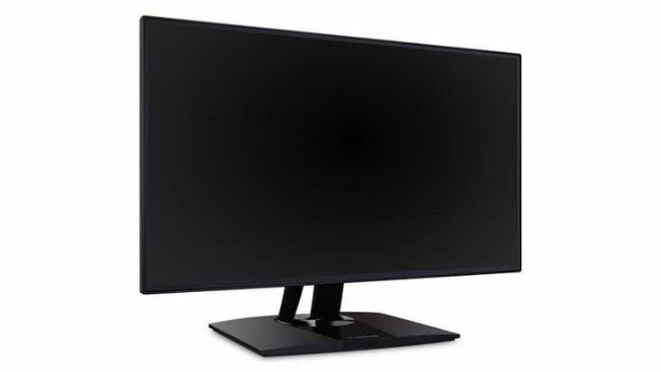
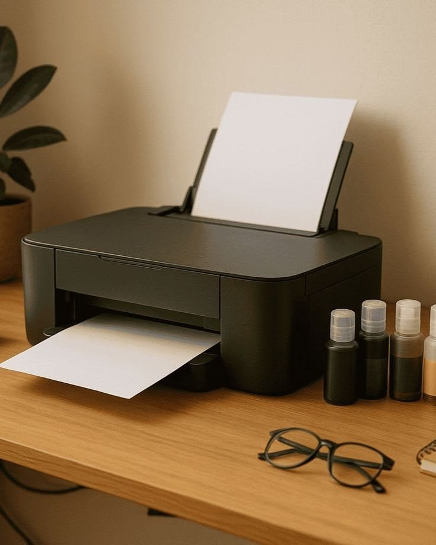

👁️
Зрение
Глаза помогают получать зрительную информацию: текст, цвет, форму, изображение, движение.
Компьютер — универсальная машина для работы с информацией.
Каждую секунду мы что-то видим, слышим, ощущаем, запоминаем и сообщаем другим. На этом уроке разберёмся, что такое информация, какие бывают информационные процессы и почему компьютер умеет работать с ними так по-разному.
Начать путешествие →
ЧТО ТАКОЕ ИНФОРМАЦИЯ?
Информация — это сведения о мире, предметах, событиях и явлениях, которые мы получаем, храним, передаём или обрабатываем.
Например, надпись на дорожном знаке сообщает, куда ехать; звонок будильника сообщает, что пора вставать; прогноз погоды помогает решить, какую одежду надеть.

Чем передавали информацию в разное времяГлаза помогают получать зрительную информацию: текст, цвет, форму, изображение, движение.
Уши помогают получать звуковую информацию: речь, музыку, сигналы, шумы.
Нос позволяет узнавать информацию о запахах: например, запах дыма или еды.
Язык помогает различать вкусовую информацию: сладкое, кислое, солёное и другое.
Кожа позволяет узнавать о поверхности, температуре, форме и других свойствах предметов.
ФОРМЫ ПРЕДСТАВЛЕНИЯ
Для человека и компьютера особенно важна форма, в которой представлена информация.
Слова, предложения, книги, сообщения, подписи.
Пример: «Завтра контрольная работа».Числа, измерения, даты, результаты вычислений.
Пример: 25 °C, 2026 год, 12 учеников.Фотографии, рисунки, карты, схемы, чертежи, диаграммы.
Пример: карта маршрута.Речь, музыка, звуки природы и сигналы.
Пример: звонок телефона.Последовательность изображений, часто сопровождаемая звуком.
Пример: мультфильм или видеоурок.ИНФОРМАЦИОННЫЕ ПРОЦЕССЫ
Когда мы работаем с информацией, происходят информационные процессы.
Узнать, заметить, услышать, прочитать, измерить.
Сравнить, вычислить, изменить, отсортировать, сделать вывод.
Запомнить или сохранить так, чтобы использовать позже.
Сообщить информацию другому человеку или устройству.
КОМПЬЮТЕР
Компьютер — универсальная электронная машина, предназначенная для работы с информацией.
Слово «универсальный» означает, что один и тот же компьютер может выполнять очень разные задачи: считать, работать с текстом и изображениями, воспроизводить звук и видео, хранить файлы, помогать создавать проекты и управлять различными устройствами.
Главное условие: компьютер должен получить программу и данные, с которыми ему предстоит работать.

Один компьютер — множество задачУСТРОЙСТВА КОМПЬЮТЕРА
Разные устройства выполняют разные части общей работы. Упрощённо путь информации можно представить так:




Устройство ввода — с её помощью вводят текст, числа и команды.

Устройство управления указателем и выбора объектов на экране.

Устройство вывода — показывает текстовую и графическую информацию.

Устройство вывода — печатает информацию на бумаге.
ЖЕЛЕЗО И ПРОГРАММЫ
Все физические устройства, которые можно увидеть или потрогать: монитор, клавиатура, мышь, процессор, память, накопитель и другие компоненты.
Программы и данные, благодаря которым компьютер знает, что и как выполнять: операционная система, редакторы, браузер, игры и другие приложения.
Аналогия: представь кухню. Плита, холодильник и ножи — это «аппаратная часть». Рецепты и инструкции — это «программы». Для результата нужны и инструменты, и инструкции.
РАБОТА ЗА КОМПЬЮТЕРОМ
Сиди прямо, не наклоняйся слишком близко к экрану, ставь ноги устойчиво.
Не проводи перед экраном непрерывно слишком много времени. Делай перерывы и меняй направление взгляда.
Не трогай провода и разъёмы мокрыми руками и не разбирай оборудование без разрешения.
Держи рабочее место чистым и свободным от лишних предметов.
ГЛАВНОЕ ЗА УРОК